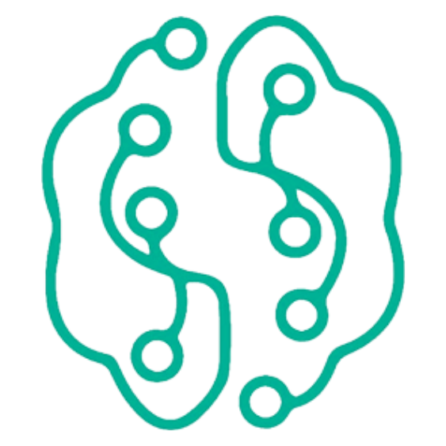

O que é LTD?
O Laboratório de Transformação Digital (LTD) da Estácio é uma iniciativa da Faculdade Estácio voltada para a inovação tecnológica e a digitalização de processos institucionais. Seu principal objetivo é explorar e implementar soluções tecnológicas inovadoras que otimizem processos e aprimorem a experiência de alunos, professores e funcionários da instituição. O LTD integra os Núcleos Extensionistas da Estácio, proporcionando aos estudantes oportunidades práticas de aplicar conhecimentos adquiridos em sala de aula para resolver desafios reais e contribuir para o desenvolvimento da sociedade.